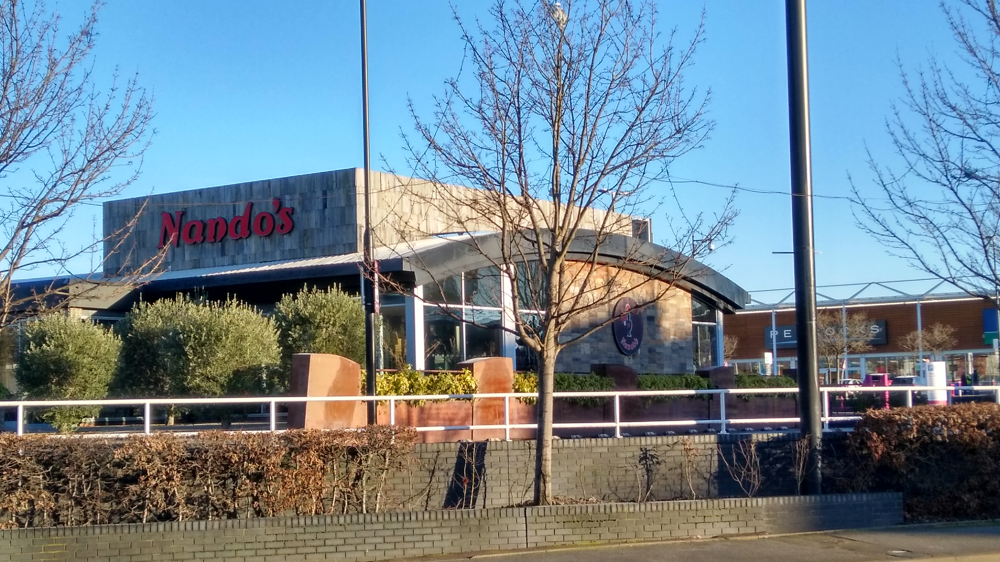
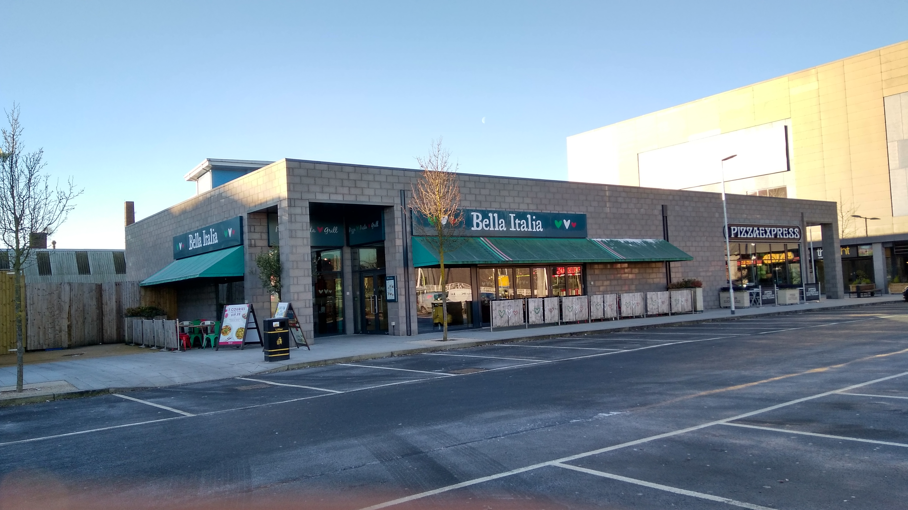
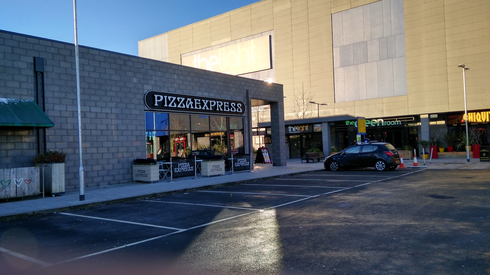
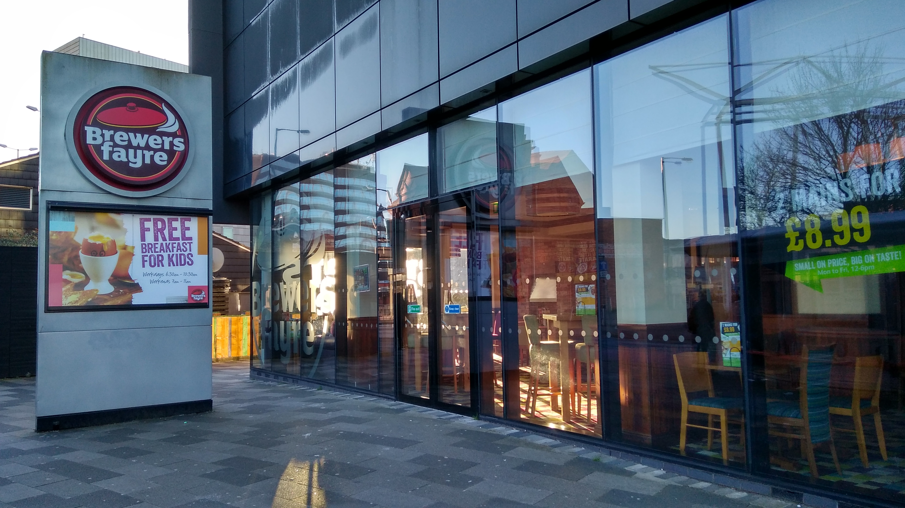

Nando's is a local restaurnat specialzied in chicken. They offer a range of different plates, a must go if you like chicken. The place is clean and good looking, and the staff is really nice. Check their menu, or order a tbale from their website (Nando's)
At Bella Italia Walsall there's something for everyone. Open next to the Light Cinema we are thrilled to serve you pre-cinema meals and post-shopping treats as well as make every occasion unforgettable with steaming bowls of pasta, crisp and tasty pizzas and finger-licking good gelato coming to you all the way from Pizzo in Italy. Small groups and big parties are welcome. Check out their menu on their website (Bella Italia)
Loacated near the Light Cinema in Walsall is a good place to go, after or before a movie. As the name says it makes mainly pizza, but there is more, like rice and calamari. Check out their menu on their website (Pizza Express)
This Brewers Fayre was built in 2012, is situated in the town centre of Walsall. They have freshly cooked, classic pub food, served up in generous portions by a friendly and enthusiastic team. Check out their menu on their website (Brewers)
